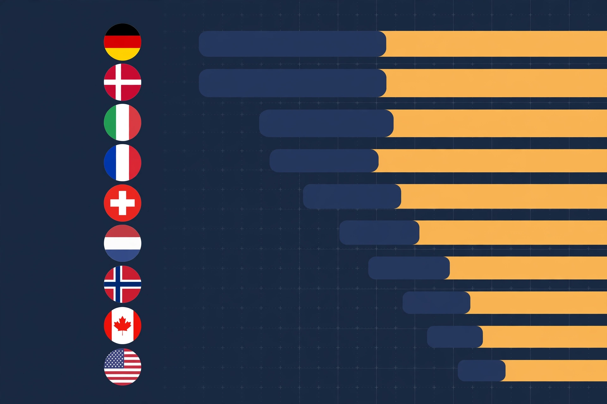

Effective Tax Rate Comparison
An analysis of how tax rates compare across different income brackets and jurisdictions.
Exploring data and insights that matter.

An analysis of how tax rates compare across different income brackets and jurisdictions.
How many people actually vote in UK elections — turnout across a century of general elections, broken down by age, region, election type, and the millions missing from the register.
Britain’s water is carved into regional monopolies: explore who supplies your tap water and removes your sewage, why households cannot switch, how the system arose, and what might fix bills.